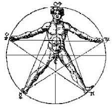
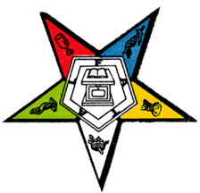
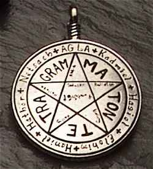
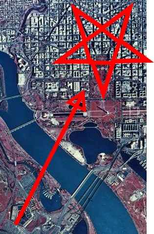

|
Pentagramaka Pentangle, Pentacle Lately it's been besmirched as a sigil of Satanism, but the pentagram is a versatile totem, and it's been around since long before anyone got around to inventing Satan.
Lately it's been besmirched as a sigil of Satanism, but the pentagram is a versatile totem, and it's been around since long before anyone got around to inventing Satan.The design is an equidistant five-pointed star drawn with a single continuous motion of the pen. Sometimes the design is enclosed in a circle. The symbol goes back to 4,000 B.C. at least, where it surfaced in the earliest form of writing, pictographic languages used in ancient Mesopotamia, whose alphabet consisted of little pictures that represented whole words. No one knows what the pentagram meant to the Sumerians (despite what you might hear to the contrary), but most of the stone tablets of this period consist of really simple, pragmatic lists—such as tax records, inventories and genealogies.  The odds are quite good that the original meaning of the pentagram was something extremely boring, like "cow". It might have meant "person", since the shape famously corresponds to a head, two outstretched arms, and two legs, or it might have meant "hand", with its five points representing five fingers. But all this is sheer guesswork. Whatever its original context, it didn't take long for the shape to absorb a more elevated status. Pythagoras, a Greek philosopher who basically invented formal geometry, believed that the world was made of math and that everything in life could be numerically quantified and represented.  His premise isn't too far from what a physicist would tell you today, but some of his direct conclusions were naive (in a manner appropriate to the time). Pythagoras was fascinated with the pentagram, as well as the six-pointed hexagram, and spent a lot of energy analyzing its properties, as well as its relation to other shapes. Pythagoras made several observations about the pentagram, such as that there's a pentagon inside it, and that if you draw a pentagon from the points of the star, it's inverted compared to the inside one, and that you can draw a pentagram with one continuous stroke. In other words, Pythagoras had little interesting to say about the topic, but he considered the design important enough that his followers used it as their insignia. They believed it symbolized health or perfection. Pentagrams were also used by Jewish mystical artists dating back to an unknown period of antiquity. The oldest documented examples were in synagogues with a few centuries of the start of the Christian era, but later legend has it that the pentagram was also associated with King Solomon, as part of his seal and as a symbol prominently featured in his Temple. Pentagrams were frequently used in pagan, Jewish, Eastern and even Christian mystical contexts as a symbol of just about anything that came in fives. Frequently, it was taken as a symbol of the four alchemical elements—earth, air, fire and water—plus a fifth point that meant different things to different people, most often either divine power or the human soul.  Because humans all over the world have five fingers, the number five carries significance in virtually every culture, and the pentagram was a convenient carrier of that number. There are examples of the pentagram being used in Taoism and other Chinese systems as a symbol of the five elements used in Eastern cosmology—wood, metal, earth, fire and water. In some early Christian traditions, including Gnosticism, the five points of the star represented the five wounds of Christ. Eventually other traditions used pentagram-derived stars as a representation of a star from the sky, likely an effort to artistically represent the twinkling effect caused by atmospheric distortion. During the middle ages, however, the pentagram underwent an major transformation, which would permanently shape its image for centuries to come. Probably the most important document in pentagramology is The Seal of Solomon inspired a lot of derivative magickal texts, which spread the pentagram far and wide. The status of the symbol took a giant leap forward when it was adopted by the occult-influenced Freemasonry movement, and related sects like the Eastern Star, the Golden Dawn, and the O.T.O. The Masons may have taken their cue from the Knights Templar, who are perhaps posthumously the sect most responsible for the pentagram's association with Satanic beliefs. When the Templars were destroyed in the early 1300s, they were accused of many Satanic atrocities, including the worship of an unspecified object that resembled a cat or a head, known as Baphomet. While some have theorized that the object in question may have been the Shroud of Turin folded to display the head of the Christ figure on the cloth, the popular conception of the Baphomet was later influenced by occultist Eliphas Levi, and subsequently by Aleister Crowley and some of his cronies.  Levi put forward a Baphomet design that featured an image of a goat's head inside an inverted pentagram, with the horns extending up into the points of the star. The goat symbolizes Satan, and the symbol was later adopted by Satanists of the Anton LaVey school. The symbol was then retroactively "discovered" to have an extensive occultist history by revisionist New Age and occult historians, who claimed it was an ancient symbol in virtually every magic tradition, including traditional and Wiccan witchcraft, pseudo-Egyptian occultist, etc., etc. By the time this association had been firmly established, the pentagram or its filled-in variant had been institutionalized all over the world in a whole lot of different contexts—including religions, secret societies and many others—for instance, in the flag of the United States and the crescent and star symbol of Islam. The retroactive—and largely inaccurate—association of the pentagram with all things devilish has provided ample fodder for those loonies whose lives are devoted to seeking to chart the dark influence of Satan all over the world. The pentagram has also become a mainstay of the New World Order conspiracy craze, where it is seen as a link between the lords of the military-industrial complex and the Masonic-Illuminati-whatever plot to rule the world. As if they needed more encouragement.
|